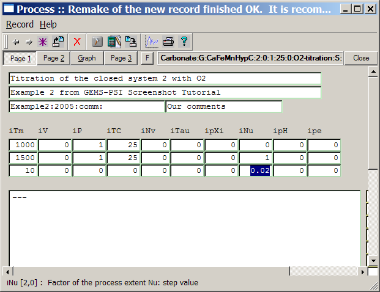
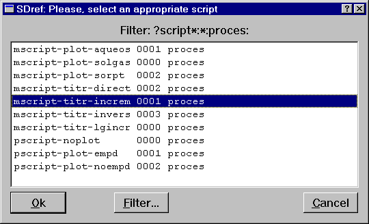
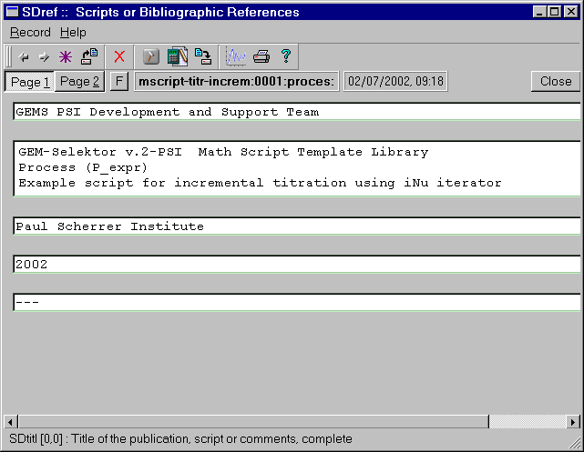
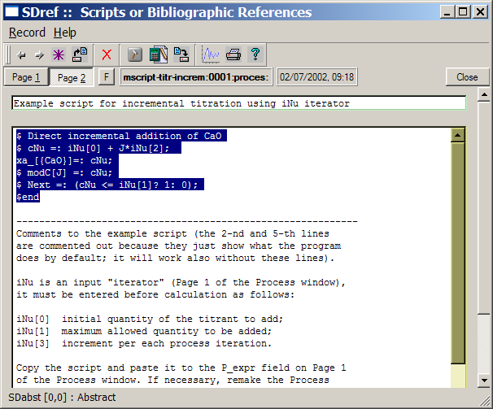
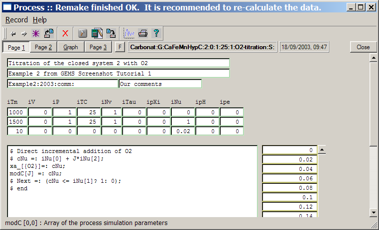
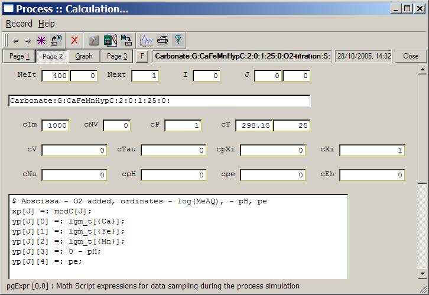

GEM-Selektor version
3
GEM-Selektor version
3
SCREENSHOT GALLERY
TUTORIAL
Previous Page
Back to Start Page
(24) How
to
set up iterators and scripts in your first Process Simulator.
What remains is
to set the Process iterators, provide the simulation- and the
data-sampling math scripts, run the simulation, and plot the results.
After you have set the iterators, Page 1 of the Process window should
look like this:

A large (still empty) field at the bottom should contain a math
script that tells the program what and how to change during the process
simulation. To facilitate writing of such scripts, the GEMS code is
provided with the "Template script library", accessible via the "Help"
"Scripts..." menu command or the F3 keystroke.
Press F3 to see
the following dialog:

Select a suitable template script for incremental titrations, as shown
above, and press "Ok". This will open a SDref window:

The template script itself is visible on Page 2 of the SDref window:

Read the comments, then mark the script (with left mouse key pressed)
as shown above, and press Ctrl-C to
take it
into clipboard.
Switch to Page 1 of the Process window, click on the big P_expr
field and press Ctrl-V to paste the text
there.
Now you have to edit two lines: put O2 instead of CaO
(because we want to add oxygen and not lime), and uncomment (remove the
$ character) the next line to collect additions of
oxygen into the modC vector.
The final appearance of Page 1 should be like this:

Please, note that the first and the last operators are not really
needed (commented out) - the program will perform the same operations
automatically.
These operators are present for showing what the script actually does.
An
internal index J indicates the current
process
simulation point and will also be incremented automatically. The modC
array is visible to the right of the script - there we will
collect
the O2 increment (in grams) for each point for the
subsequent
plotting.
Now, switch to Page 2 where we have to provide another script for data
sampling and plotting (in the large pgExpr text
field
at the bottom).
Just as for the first time, press F3 and
select
a "mscript-plot-aqueous:0001:proces:" record
from
the list.
On page 2 of the appearing SDref record, mark and copy (Ctrl-C)
the first five lines, then switch back to the Process window and paste
(Ctrl-V)
the text into the pgExpr field. Edit the script as
shown below:

The xp and yp arrays are
accessible on the "Graph" page of the Process window. The lgm_t,
pH and pe data objects can be seen on
pages of the EqDemo window that can be opened by clicking the "Detailed
results"  toolbar button on the
"Single
Termodynamic System" dialog. Writing "0 - pH"
instead
of "-pH" is required by the syntax of GEMS math
scripts.
toolbar button on the
"Single
Termodynamic System" dialog. Writing "0 - pH"
instead
of "-pH" is required by the syntax of GEMS math
scripts.
We are now ready to run the Process simulator.
Next
Page
Back
to main GEMS-PSI page
©
2003-2005 GEMS-PSI Development and
Support Team.